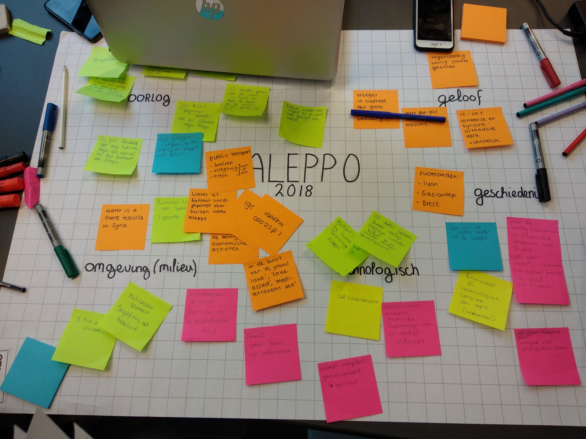
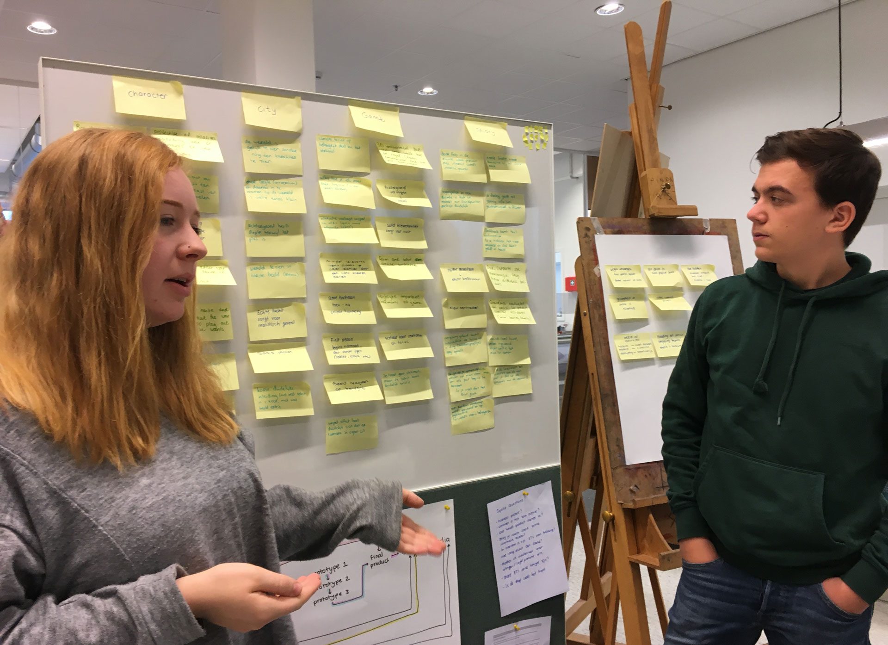
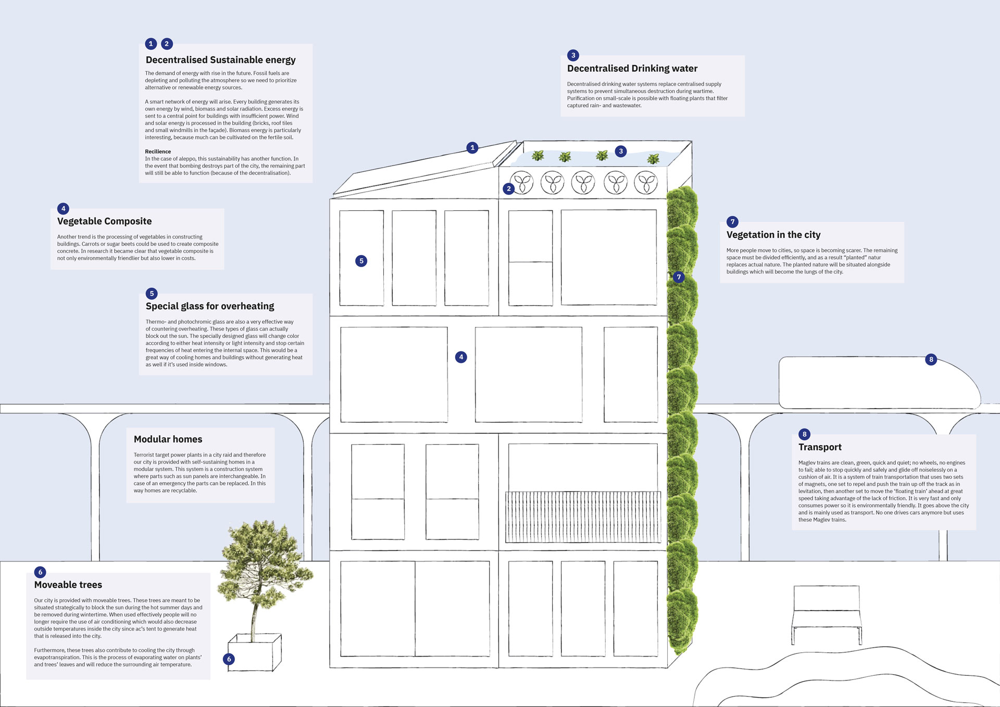
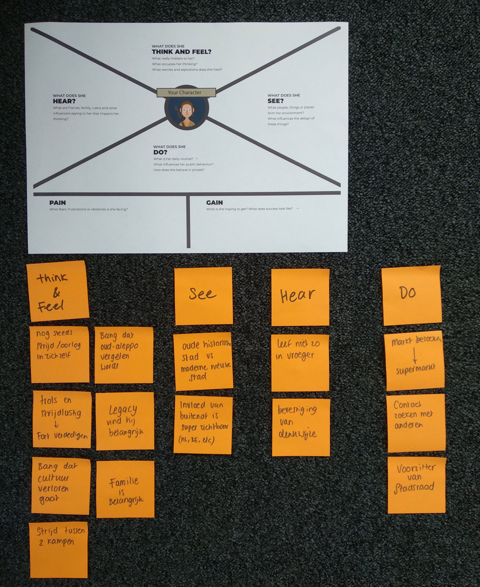
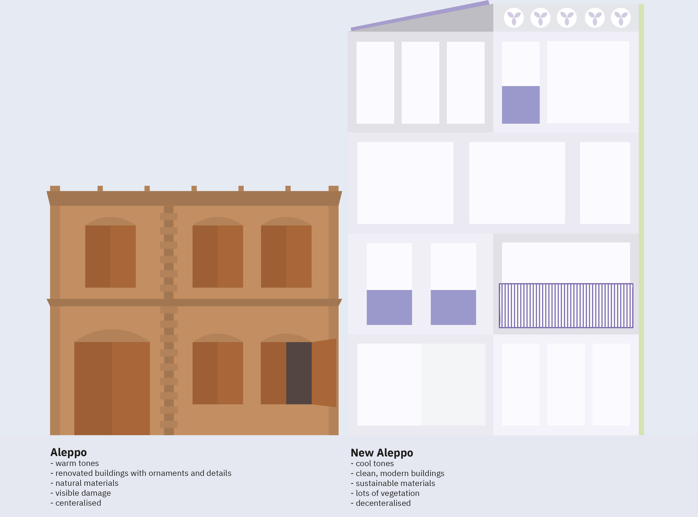
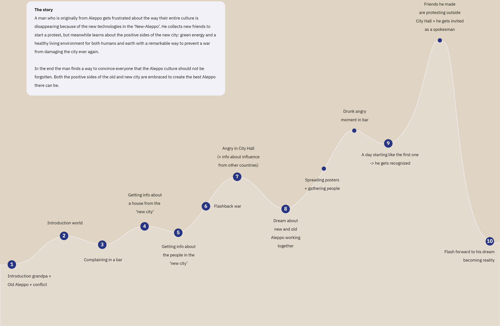

Brief / Design a demo for an immersive story game
Agency / Avans University Breda
My role / Story designer
Team / Bram, Zoë, Freek, Deborah, Luko
Aleppo has a rich history. It has gone from a vibrant cultural city to a warzone. The fear is almost over and Aleppo is free again, but can it go back to how it was before? How will this once beautiful place look in 40 years?
Back to Surah follows the story of Raed; An old man who knows Aleppo from even before the war. When peace returned he could finally come home to rebuilt the city and his culture. With his friends and family, he succeeded to bring back most of what they once had. But his local supermarket is in danger. During the renovation of Old-Aleppo, investors started working on a more modern part of Aleppo just outside the city.
Raed is frustrated. After everything they went through their culture should be safe, but this new threat is coming too close. The government won’t help, unless he can proof enough people have the same fear of their culture disappearing. Signatures from Old-Aleppo residents are not enough, so he goes on an adventure into this modern world. To show them how the people there how valuable the culture is. But while doing so he learns that their world also has a lot to offer.
Research Aleppo
To speculate what Aleppo will be like in the future, we had to know about its history.
During an intensive brainstorm we started learning about its culture, habitants, environment,
wars and much more.


World building
What parties would be interested in rebuilding or renovating this place that is almost completely in ruins?
After our research we speculate it’d be the original inhabitants who want to
preserve their culture and homes, and investors who see a clean slate in an economically
attractive environment.
The old inhabitants would renovate buildings, while investors would start from outside
the city and make new buildings. We designed modular and circular buildings that generate
their own energy and water, so New-Aleppo would be climate neutral. We noticed a big contrast
between culture and the modern sustainable city, and decided to focus on this conflict in
our story game.


Character
With a lot of information to tell we wanted to find the right perspective to tell a story from.
We wanted the leading character to find out about all this new information the same time you do as a player,
and decided for a man with a lot of emotions regarding Aleppo. He could tell his story about the history, while
showing the new modern world through his eyes.
Conflict
Since our conflict in the world was between culture and modern, we tried to find the best way
to let Raed be confronted with this conflict. It is a big conflict for one man to carry, so
we thought about smaller relatable ways to explain. We started writing out different contrasts
between culture and modern life, and came to the idea to give Raed a small local business that
has to go against multinationals.


Script
Our game contained a lot of dialogue, since you learn about the world from other people.
Thereby it’s a choice-driven game. You can select what you’re feeling after reading the
dialogue, and this affects the story. By first writing out what information was necessary
to be told I could start writing scripts. I perfected them until they were concrete and
easily readable.